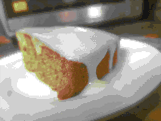

Carrot Cake
go back

The frosting is 90% of the flavour!
ingredients
batter
flour - 1 3/4 cups
baking powder - 1 1/2 tsp
baking soda - 1 tsp
cinnamon 1/2 tsp
eggs - 4
vegetable oil - 1 cup
sugar - 3/4 cup
shredded carrot - 2 cups
vanilla - 1 tsp
frosting
sugar - 1/2 cup
butter - 1/2 cup
cream cheese - 1 cup
sour cream - 1/2 cup
vanilla - 1 tsp
thats all of it!
directions
batter
mix the eggs and vegetable oil together
slowly mix in the flour, baking soda, baking powder and cinnamon. if you pour it in to fast it will start to clump up!
pour the rest of the ingredients in and mix
preheat the oven at 175°C
cook for 45 minutes at 175°C
take it out of the oven and wait for it to cool
spread the frosting on top
frosting
mix the ingredients together. thats it! super easy
the last and most important step, is to eat it